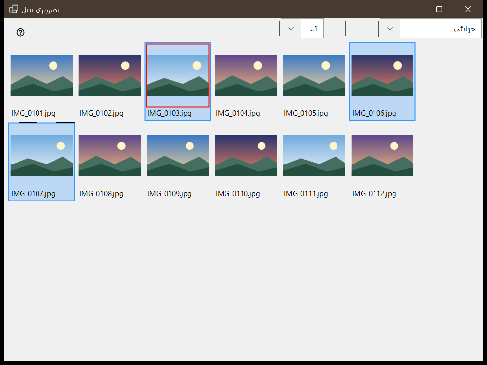
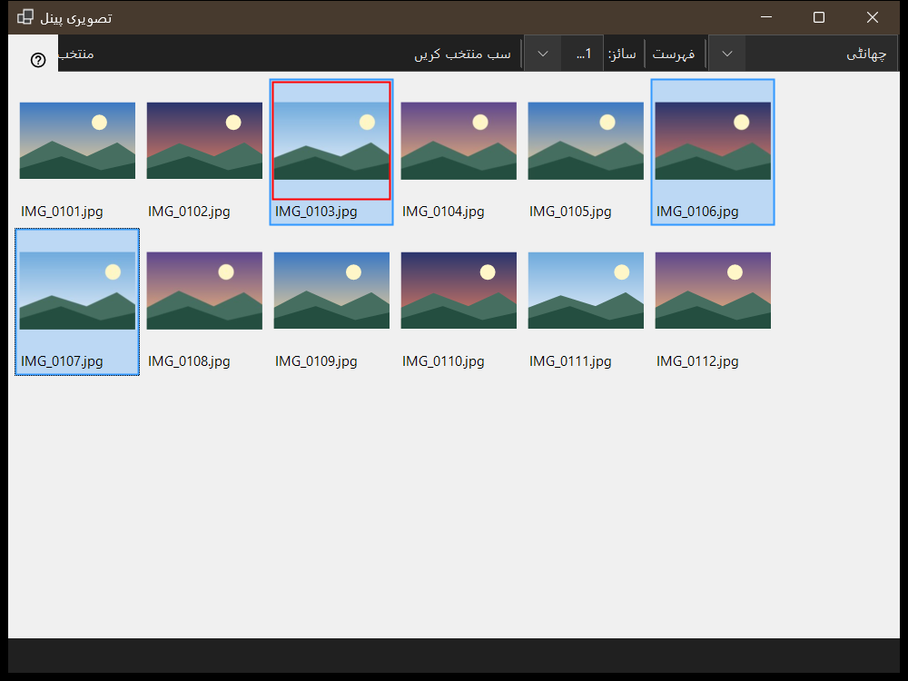

تصویری پینل
یہ کس مقصد کے لیے ہے
تصویری پینل ویور سے F3 دبانے پر کھلتا ہے اور دو موڈز میں کام کرتا ہے جو پینل موڈ فہرست میں منتخب ہوتے ہیں: چھانٹی، یعنی موجودہ فولڈر کے تھمب نیلز کا گرڈ، اور فائل مینیجر، یعنی مقامات، فولڈرز اور فائل کمانڈز والا براؤزر۔ فائلیں دیکھنے، انہیں منتخب کرنے اور پینل بند کرنے سے مرکزی ونڈو جو دکھاتی ہے وہ نہیں بدلتا۔


اس ترتیب میں
- ویور میں F3 دبائیں۔
- پینل موڈ میں موڈ منتخب کریں۔
- فائلیں منتخب کریں: کلک کریں، حد کے لیے Shift+کلک، ایک فائل کو ٹوگل کرنے کے لیے Ctrl+کلک، یا فریم کھینچیں۔
- چھانٹی موڈ میں انتخاب کو منزل فولڈر میں منتقل کرنے کے لیے 0-9 دبائیں، یا نقل کرنے کے لیے اوپر کی قطار کے ہندسے کے ساتھ Shift دبائیں؛ Ctrl+Z آخری عمل کو واپس کرتا ہے۔
- فائل کو مرکزی ونڈو میں کھولنے کے لیے اس پر ڈبل کلک کریں یا Enter دبائیں۔
- جاری عمل منسوخ کرنے کے لیے Esc دبائیں، پھر پینل بند کرنے کے لیے دوبارہ Esc دبائیں۔
عناصر
پینل موڈ
پینل موڈ چھانٹی اور فائل مینیجر کے درمیان بدلتا ہے۔ چھانٹی موڈ فوری منتقلی اور نقل کے لیے موجودہ فولڈر کے تھمب نیلز دکھاتا ہے؛ فائل مینیجر کوئی بھی فولڈر براؤز کرتا ہے اور فائل کمانڈز دیتا ہے۔
سائز، ترتیب اور انتخاب
سلائیڈر (سائز:) تھمب نیلز کا سائز طے کرتا ہے، ٹائلیں اور فہرست بٹن ترتیب بدلتے ہیں (Ctrl+L)، اور انتخاب کاؤنٹر بتاتا ہے کہ کل میں سے کتنی فائلیں منتخب ہیں۔
انتخاب اور چھانٹی
کلک منتخب کرتا ہے، Shift+کلک حد منتخب کرتا ہے، Ctrl+کلک ایک فائل کو ٹوگل کرتا ہے اور کھینچنے سے انتخابی فریم بنتا ہے۔ Ctrl+A سب منتخب کرتا ہے، Ctrl+Shift+A انتخاب ہٹاتا ہے، Ctrl+I اسے الٹ دیتا ہے، Space فائل پر نشان لگاتا ہے، اور تیروں، Home، End، PgUp اور PgDn سے حرکت کی جاتی ہے۔ ہندسے 0-9 انتخاب کو اس کلید کے منزل فولڈر میں منتقل کرتے ہیں، اوپر کی قطار کے ہندسے کے ساتھ Shift اسے نقل کرتا ہے، Del اسے حذف کرتا ہے اور Ctrl+Z آخری عمل کو واپس کرتا ہے۔
فلٹر اور پوشیدہ فائلیں
مواد کا فلٹر میڈیا فائلیں، میڈیا اور دستاویزات یا تمام فائلیں منتخب کرتا ہے، اور پوشیدہ بٹن پوشیدہ فائلیں دکھاتا یا چھپاتا ہے۔ ترتیبات.. بٹن ترتیبات کی ونڈو کو فائل مینیجر کے صفحے پر کھولتا ہے، جہاں ڈسپلے موڈ، فلٹر، مقامات اور یاد رکھی گئی چھانٹی کی ترتیب طے کی جاتی ہے۔
فائل کمانڈز
Ctrl+C، Ctrl+X اور Ctrl+V نقل، کٹ اور پیسٹ کرتے ہیں، F2 نام بدلتا ہے، Ctrl+Shift+N فولڈر بناتا ہے، Del اور Shift+Del منتخب آئٹمز حذف کرتے ہیں اور Alt+Enter خصوصیات دکھاتا ہے۔ وسائل کے درمیان نقل یا منتقلی اس پی سی سے ہو کر گزرتی ہے۔
ZIP بنائیں
ZIP بنائیں تمام منتخب فولڈرز اور فائلوں کو ایک آرکائیو میں پیک کرتا ہے۔ اصل فائلیں حذف کرنا بطورِ طے شدہ بند ہے اور صرف آرکائیو کی جانچ اور اشاعت کے بعد ہی ممکن ہے۔
یہاں نکالیں
یہاں نکالیں ایک منتخب آرکائیو پر کام کرتا ہے: فولڈرز اور عام فائلیں برقرار رہتی ہیں، اصل آرکائیو اپنی جگہ رہتا ہے اور نکالے گئے پروگرام کبھی نہیں چلائے جاتے۔ Esc عمل منسوخ کرتا ہے۔